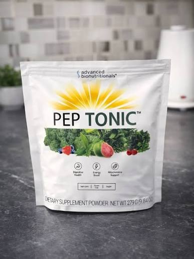
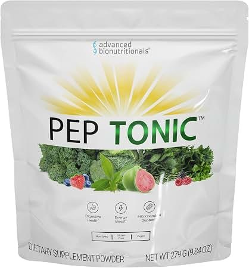

Pep Tonic combines 50 superfoods with two clinically-studied compounds, Puremidine® and MitoPrime®, into one daily scoop designed to support your cells' natural energy and renewal process.
See How Pep Tonic Works →Backed by a 90-day, empty-bag money-back guarantee

You're not imagining it, and it's not "just age." In your 20s and 30s, energy felt endless. Somewhere along the way, mid-afternoon fog set in, workouts got harder to recover from, and that natural bounce in your step quietly disappeared.
Inside almost every cell in your body are microscopic power generators called mitochondria. Their job is to convert the food you eat and the oxygen you breathe into ATP — the energy currency your entire body runs on. As we age, mitochondria naturally decline in number and efficiency, and a related process called autophagy — your body's system for clearing out old, worn-out "zombie" cells — slows down too.
Caffeine doesn't create energy. It borrows it from tomorrow — which is why the crash always follows the buzz.
That's the gap Pep Tonic was formulated to address: giving your cells the raw materials to support their own energy production and renewal, instead of masking fatigue with stimulants.
A daily superfood powder built around three core areas of support, right on the label.
A fiber blend and plant-based enzymes to support smooth, comfortable digestion.
Steady, non-stimulant support for daily vitality — no caffeine, no jitters.
Formulated to support your cells' own energy-producing machinery.

Each daily serving blends over 50 fruits, vegetables, and herbs — including antioxidant-rich acai, pomegranate, and dark berries — with a liquid delivery system designed to absorb quickly, without the digestive heaviness of hard-pressed pills.
It's made in a GMP-certified facility, and every batch is non-GMO, gluten-free, and 100% vegan. There's nothing to swallow, nothing to chew — just mix it into water or your drink of choice.
The two headline ingredients you won't find in a typical greens powder.
Studied for its role in supporting autophagy — your body's natural process for clearing out old, less-efficient cells and encouraging cellular renewal.
Included to support how efficiently your cells produce and use energy, both at rest and during activity.
A well-studied adaptogenic herb traditionally used to help the body manage physical and mental stress.
A plant compound included to support the body's natural stress response and cellular balance.
Supports healthy digestion, which plays a role in how efficiently your body absorbs and uses nutrients.
A broad-spectrum base of antioxidant-rich produce, including acai, pomegranate, and dark berries.
Most "energy" products lean on stimulants that spike your nervous system and leave you crashing a few hours later. Pep Tonic takes a different approach: supporting the cellular machinery that produces energy in the first place, so there's no jittery high and no afternoon collapse to follow.
That makes it a fit for people who are sensitive to caffeine, who already drink coffee and don't want to add more stimulants on top, or who simply want steadier energy throughout the day rather than a short-lived spike.
Recurring themes pulled from publicly available customer reviews and third-party coverage of Pep Tonic.
Steadier energy through the day, without the caffeine crash.
Noticeably easier digestion after switching from pills to the powder.
A pleasant, easy-to-drink taste that fits into a morning routine.
Appreciation for the 90-day guarantee removing the pressure to decide fast.
Individual results vary. These reflect commonly reported themes, not guaranteed outcomes.
Advanced Bionutritionals backs Pep Tonic with a 90-day money-back guarantee — even if the bag is empty. That's enough time to actually find out whether it makes a difference for you, with the financial risk on them, not you.
Pricing and current promotions are set by Advanced Bionutritionals and may change — confirm the latest offer on the official page before you order.
All packages are covered by the same 90-day money-back guarantee. Pep Tonic is sold exclusively through the official Advanced Bionutritionals site — it isn't available in stores.
It's built for adults, generally over 40, who notice their energy isn't what it used to be and want to address it at the cellular level rather than with more caffeine. If you're younger, sleep well, and already feel great, you may not need it.
Yes. Pep Tonic is 100% vegan, non-GMO, and gluten-free, made in a GMP-certified facility.
Mix one scoop into water or the beverage of your choice, once per day. Each bag contains 30 servings — a one-month supply.
You're covered by a 90-day money-back guarantee directly from Advanced Bionutritionals, even if the bag is empty. You're responsible for return shipping, but the product itself is refundable.
Pep Tonic is sold exclusively through the official Advanced Bionutritionals website — it isn't sold in retail stores. Use the button on this page to view current pricing and packages.
See current pricing, package options, and the full ingredient breakdown on the official Advanced Bionutritionals page.
Get Pep Tonic Now →90-day money-back guarantee · Secure official checkout